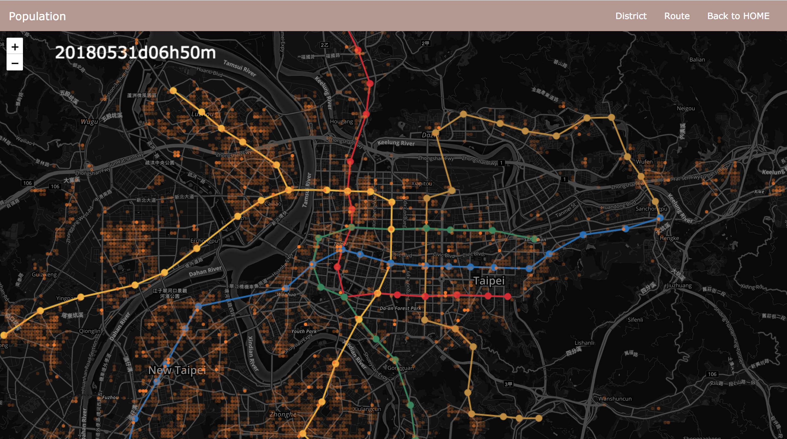
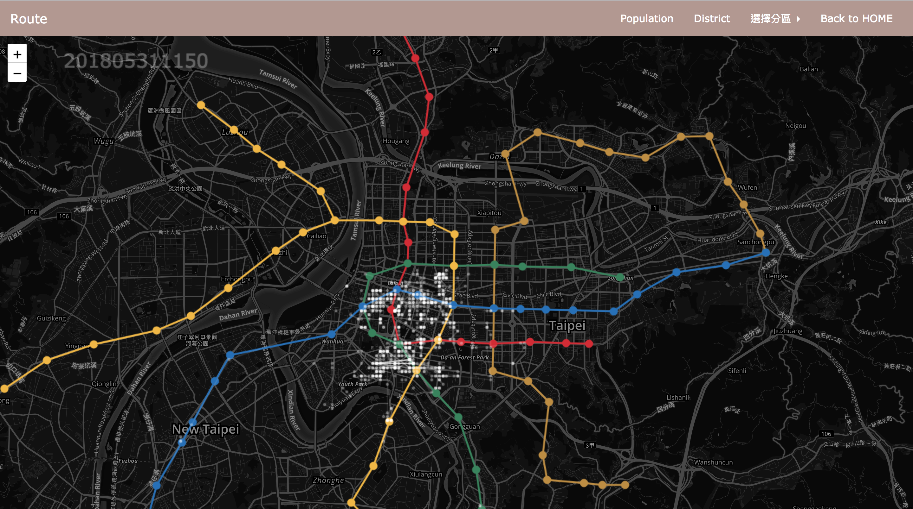

Population Demo
In this, you can see the change of people moving by time

District Demo
We use KD_tree to classify people to each corresponding area.

Route Demo
In each specific district, you can see the different type moving by time